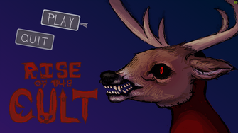
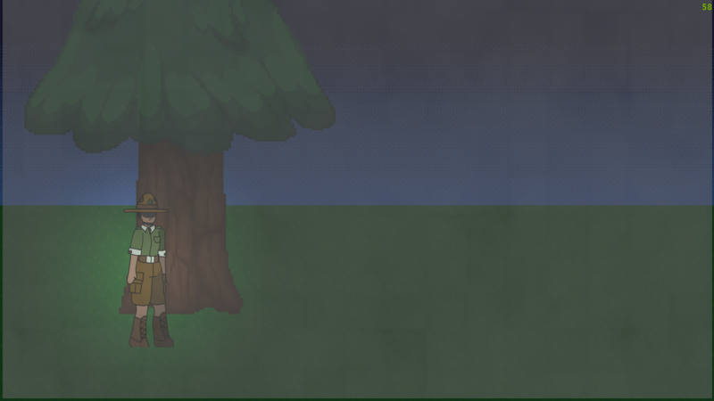
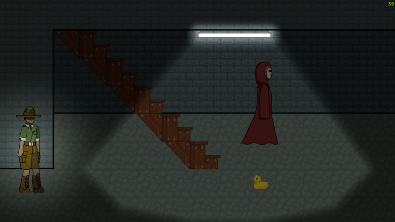

Welcome to my portfolio! My name is Adam Arseneau (Geckomega) and I'm a passionate programmer and game developer. I studied in game development in NBCC Miramichi for 2 years and have worked on many projects individually and in teams. This website contains demos of projects I am proud to have worked on and it will showcase my competencies.



This project is a 2d sidescroller horror game made for the global game jam in 2026
I was the sole programmer on the project, responsible for all gameplay systems and ensuring the overall feel of the game was smooth and responsive. The core mechanic revolves around an enemy in the background chasing the player while the player navigates the map and hides behind walls or furniture. The enemy behavior is driven by a state machine. It patrols between predefined transforms in the scene and transitions into a chase state when the player enters its detection hitbox. This system handles movement, state transitions, and detection logic in a modular way. The game also includes an interactable drawer minigame. On scene load, drawers are assigned randomized contents (a key or a code), allowing each playthrough to be slightly different. This system uses simple randomization and scene‑based initialization to keep the logic lightweight. The player controller supports left/right movement, jumping, and crouching. When crouching behind walls, couches, or drawers, the player becomes invisible to the enemy, integrating stealth mechanics directly into the movement system.
The biggest challenge was the strict 48‑hour time limit of the game jam. As a team, we had to prioritize essential features first to ensure the game was playable before adding any polish. This required constant communication, quick decision‑making, and a willingness to cut or simplify ideas when necessary. Another major challenge came from using GitHub for the first time as a team. Early on, we frequently overwrote each other’s work or caused merge conflicts, which forced us to redo parts of the project. To solve this, we improved our communication around changes, coordinated who was working on what, and made sure to pull and push updates more carefully. By the end of the jam, our workflow was much smoother and more organized.
Email -> GeckomegaDV@outlook.com Email Me
Disclaimer: Some visuals and audio elements showcased here belong to their original creators. Please consider supporting the artists behind the work.